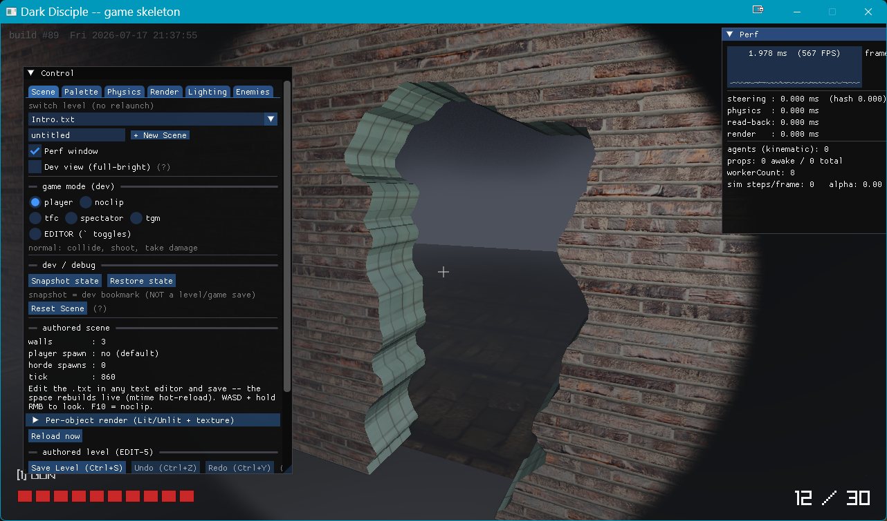
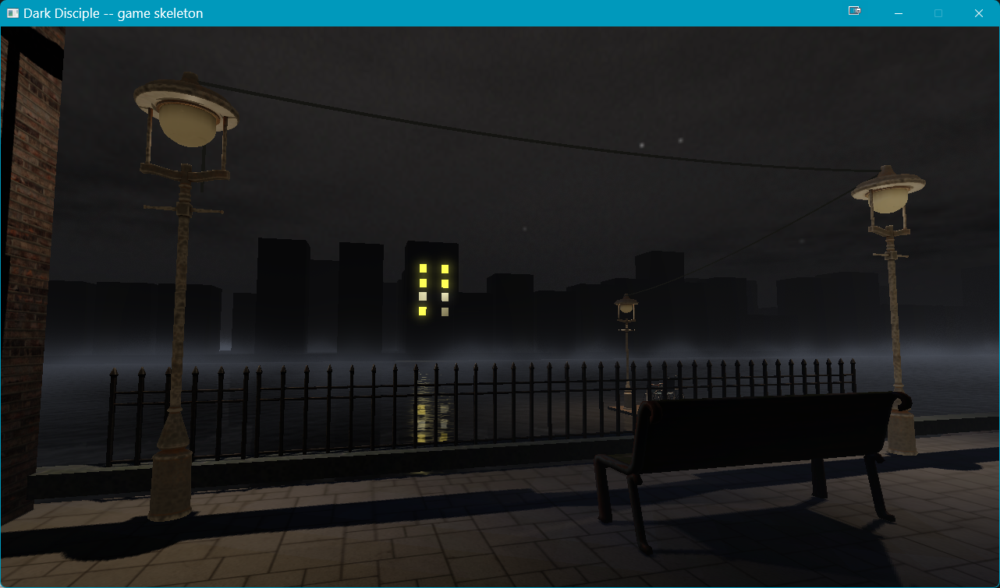
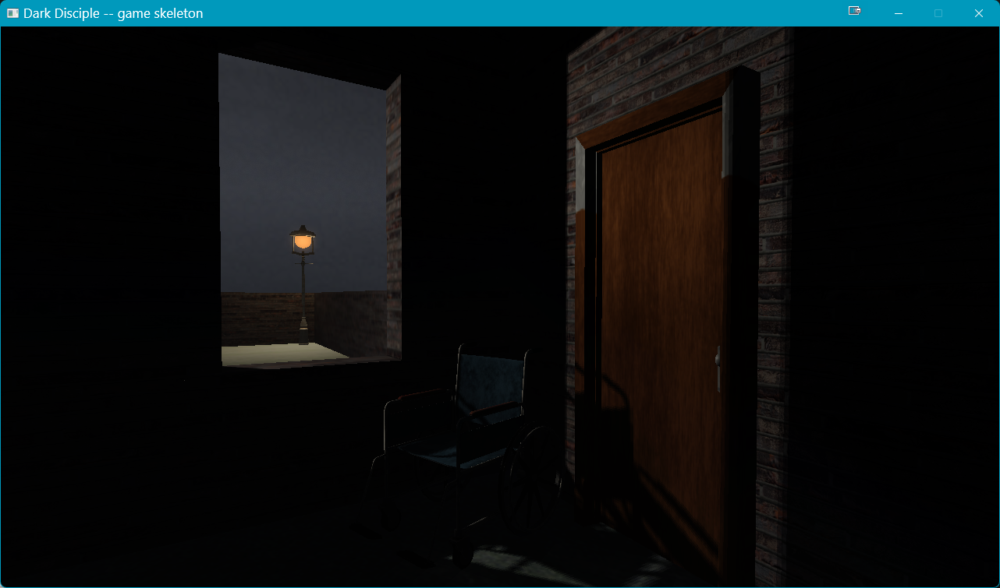

Digging Holes in the Dark
Spent the weekend inside DarkDisciple again. The level editor.
There's something about building engine tech that feels different from making a game. When you're in Unity, you're assembling — dragging prefabs, wiring behaviors, painting terrain. But when you're writing the thing that does the painting, every feature is a physics problem you have to solve from scratch. Want a hole in a wall? You don't click "add hole." You write a bool operation that carves geometry out of geometry, and then you spend an hour figuring out why the texture coordinates go haywire when the cut surface isn't perfectly axis-aligned.

That's what this weekend was. Bool cuts that didn't want to cut. A waterfront promenade level slowly taking shape — water with planar reflections, sky dome with drifting clouds, lamp posts casting soft shadows.



The editor itself keeps growing: multi-select with marquee drag, paste-at-exact-position instead of the cursed auto-offset, material grading that remembers your settings when you reload the map. All those little papercuts that make the difference between a tool you tolerate and a tool you enjoy.
Also started blocking out the intro scene. A wheelchair beside a window. No combat, no UI — just a moment of stillness before everything starts. These quiet scenes matter. They're the breath before the plunge.

The name "Dark Disciple" keeps fitting better every session. This isn't a weekend game jam project anymore. It's a custom engine with a custom editor, volumetric fog, dynamic lighting, a sky system, water shaders, and a geometry system that lets you punch holes through anything. All in C++ and raylib. No Unity. No Unreal. Just raw loops and math.
Sometimes I wonder if this is the slow path or the right path. Probably both. But there's no way I'd be learning this much if I'd stayed in someone else's editor.
One hole at a time.